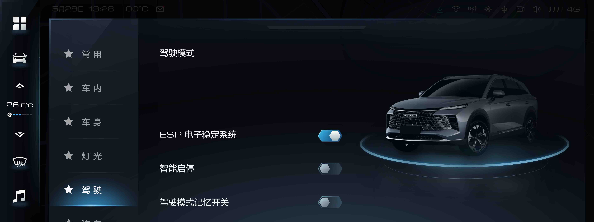

多媒体互动广场
–
Mecha Motion
Search
设计指南
概述
环境
属性
动效原则
原则
动画曲线
移动
形变
组合
动效展示
颜色
图标
图像
排版
组件库动效
底部导航
底部卡片
按钮
浮动操作按钮
卡片
纸片
数据表格
对话框
分隔线
扩展面板
网格列表
列表
列表控件
菜单
选择器
进度 & 活动状态
选择控件
滑块
Snackbars & toasts
步进器
副标题
Tab 选项卡
文本框
工具栏
工具提示
小部件
中控
360 & RVC
AC
DVR
FOTA
多媒体互动广场
个人中心
账号 & 人脸 & 声纹
全网搜
场景引擎
天气服务
智慧停车
本地通讯
注册登陆
消息中心
系统设置
能量管理
车控车设
车服务广场
违章查询
代驾模式
仪表
ADAS
本地功能
指引模式
经典模式
越野模式
赛道模式
白天模式
机甲模式
副屏及其他
副屏
HUD
智能后视镜
车载语音助手
平台
KANZI
Android
资源
动效设计资源
动画术语
字体
插件 & 扩展
变更记录
变更记录
示例一
经济
舒适
运动
沙地
雪地
越野

Tab菜单Button微动效示例。
示例二
经济
经济
经济
经济
经济
经济
经济
经济
经济
经济
经济
经济
Tab菜单Button微动效示例。
示例三
经济
舒适
运动
沙地
雪地
越野
Tab菜单Button微动效示例。
示例四
经济
舒适
运动
沙地
雪地
越野
Tab菜单Button微动效示例。
示例四
经济
舒适
运动
沙地
雪地
越野
Tab菜单Button微动效示例。